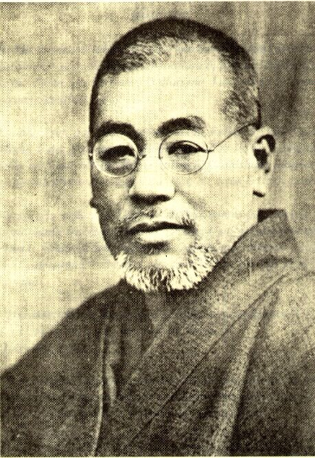

疲憊與壓力
常常感到疲憊、壓力大、睡不好，明明沒有生病卻總是提不起勁。
靈氣療癒
進入澤奎靈氣，讓身心重回平衡，喚醒你內在的自癒力。
靈氣療癒適合希望以溫和、非侵入方式安定身心的人。過程不需信仰，不需脫衣，可安排無接觸或遠距方式。
常常感到疲憊、壓力大、睡不好，明明沒有生病卻總是提不起勁。
需要深層放鬆，讓身體與呼吸慢慢回到安全、穩定的節奏。
希望不靠藥物，以補充支持的方式協助自我修復力。

靈氣是一種源自日本的自然能量療法，1922 年由臼井甕男先生所創。
經由療癒師的雙手引導宇宙生命能量進入身體，協助身心回復平衡與安定。它不同於按摩、不是氣功、不涉及宗教，也不需信仰。
承襲臼井靈氣傳承，強調實證與生活化應用。
非通靈、非神秘化商品包裝，回到身心安定本身。
療程約 50 分鐘。首次體驗優惠價 NT$800，原價 NT$1700。